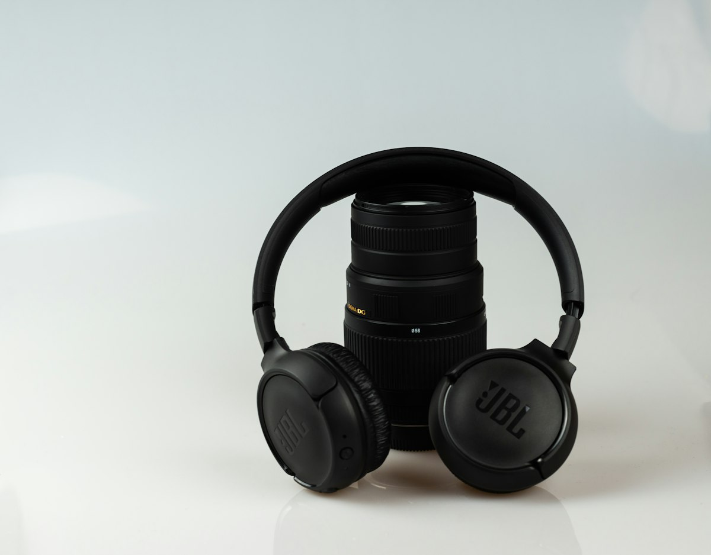

A JBL Flagship Headphone Takes A Deep Black Friday Cut
The listing carries one real number and no test protocol, and that gap decides what a shopper can actually buy for a long flight.

The headline carries one number
The Verge posted the listing on November 17, 2026, and its headline makes a single quantified claim: the JBL Tour One M3 is 67 percent off. Nothing else in that sentence is measured. The question worth asking is a different one, namely what a percentage can tell a reader who has never worn the headphone.
A discount headline describes a price column on one day. It does not describe how the object behaves in the seat where people actually use it, and that second thing is the argument here. Anyone buying on the number alone is buying a claim about arithmetic, not a claim about noise.
What a percentage can and cannot carry
Sixty-seven percent is honest arithmetic against some reference price, and the reference is exactly what a reader cannot see. Cut a headphone from a high list price and the ratio looks heroic. Cut it from a price that already drifted down twice this autumn and the same ratio marks an ordinary selling week. The listing gives the ratio, not the history.
That gap is not a scandal. It is the structure of the format. A deal post is written to move one product on one day, and its audience is shoppers rather than archivists. Nobody who wrote it intends the ratio to survive the weekend. A reader who treats it as durable is reading a different genre than the one on the page.
So the number survives as a fact about the posting and dissolves as a fact about value. To turn it into a buying decision, a reader needs the price trail, and a trail is not something a headline can carry. Storefronts publish the trail badly and inconsistently, which is why the number reads as larger than any buyer can check.
The cabin is the real claim
Buried in the same headline is the only transferable sentence: these are headphones good for in-flight entertainment. That is a use case, and a use case can be examined without a laboratory. A cabin offers a narrow, repeatable problem. Engine drone fills the low frequencies, announcements arrive as mid-range spikes, and a film on a seatback screen or a phone wants dialogue that survives both.
Canceling steady engine noise is a tractable job. It asks for a seal that holds through an hour of jaw movement and a circuit that does not smudge speech while it erases the floor. Frames and thin ear cushions defeat both, and no percentage on a page changes that physics.
This is where a shopper gets real leverage from a listing that is otherwise thin. If a headphone has been recommended for cabins repeatedly by people who sit in them, the recommendation is a kind of evidence. It is not a measurement, and it is far more useful than a discount.
What the listing does not say
The arithmetic is not in dispute.
Absent from the brief is anything a test could be built from. No hours of battery claimed or measured, and no driver size. No frequency figures, and no note on which aircraft or which seat. No protocol naming devices, conditions and criteria. A product page can be entirely truthful and still be silent on every one of those points.
There is also no comparison. Cabin performance is a relative property, and a lone product in a lone paragraph cannot demonstrate relativity. The listing tells a reader what the object costs today. It does not tell them what the object does better than the pair already in their bag, and a bag usually holds a pair.
The strongest case for buying today
The best argument against all of this runs as follows. Headphone prices are not a one-way street, autumn discounting is real, and a buyer who already knows the model does not need a fresh review. Suppose the fit is proven on that person's own head. Suppose the cabin use is proven on that person's own commute. The listing then supplies the only missing variable, which is the price.
That argument is sound and it is narrow. It serves the replacement buyer, the person who lost a pair mid-trip, the traveler who has already sat in this model on a test flight. It does not serve the first-time buyer at all, and a discount headline cannot tell those two readers apart from each other.
Note also what the narrow case concedes. Even for the informed buyer, the deal is doing the work. The listing has not earned that purchase with information; the price has, and a price is not an argument about craft. Nothing in the paragraph describes how the object behaves, only how one number moved.
The plain test a buyer can run
Aisle noise is a poor substitute for cabin noise, but it is free, and it is what most shoppers can reach. A supermarket HVAC floor and a train carriage will show whether the seal holds and whether speech stays clear through it. A buyer who walks one of those aisles learns more in twenty minutes than a discount ratio discloses.
Fit decides the rest. Weight on the temples registers late, after a long flight rather than in the first minute. Clamping around glasses is a separate complaint, and it is the one that sends headphones back in shrink-wrap. How a cushion behaves through an entire film, jaw working, is a grievance nobody publishes. Together these properties make or break a cabin headphone, and each of them is personal rather than documented. Two heads can treat the identical pair as a triumph and a torture device.
The practical instruction is short. Verify the return window before paying, because the seal cannot be judged from a box. Confirm which retailer is quoting the ratio, since the same model appears under several conditions. Then judge the object in the environment the headline claims for it, or not at all.
Buy the use case, not the number
A percentage is a shadow of a price, not the price itself, and a shadow says nothing about the object casting it. The durable content of this listing is the cabin sentence; its perishable content is the discount. One of those two still means something in March, and it is not the number in the headline.
Homeworld Press earns nothing from this piece and carries no purchase link in it, which removes any reason to hurry. The verdict rests on the use case. Buy the pair once the fit and the low-frequency floor are proven for your own traveling, and treat the headline as a date stamp on somebody else's inventory. A percentage cannot tell a sealed cushion from a leaky one.
The listing will be replaced by another listing within a news cycle, and the headphone will still be a headphone. Prices in this category move constantly, while the seal either holds on a long flight or it does not. Nothing on the page records which of those two you own until you sit down and find out.